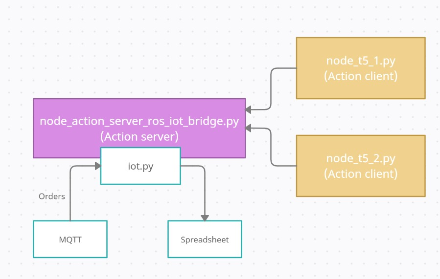
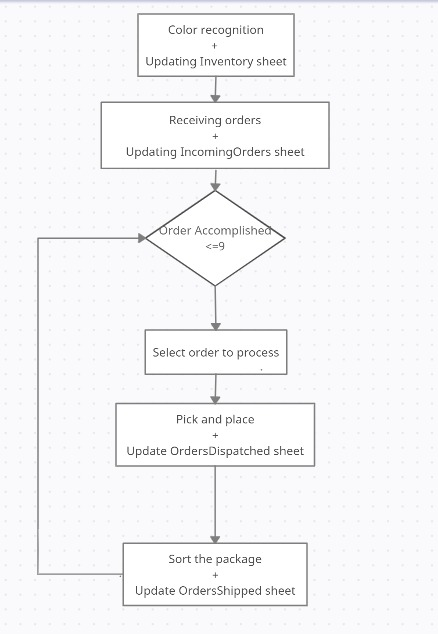
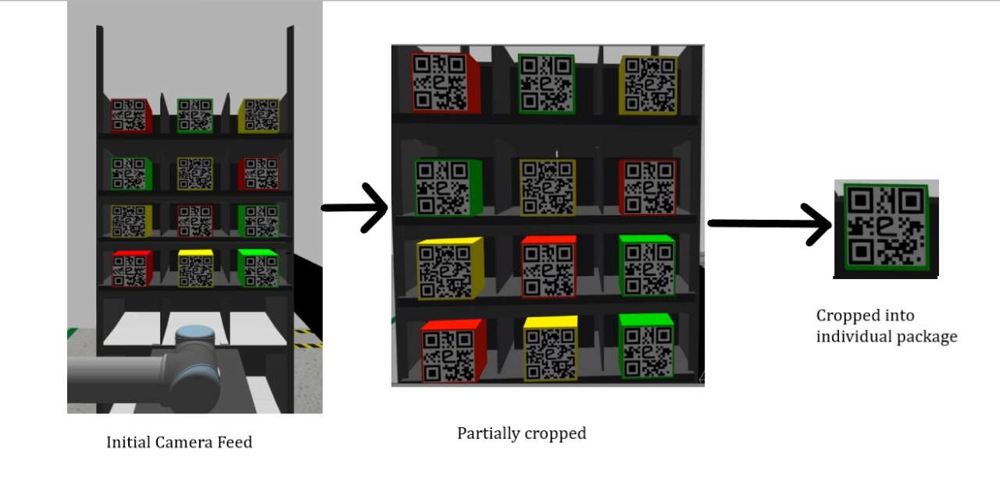
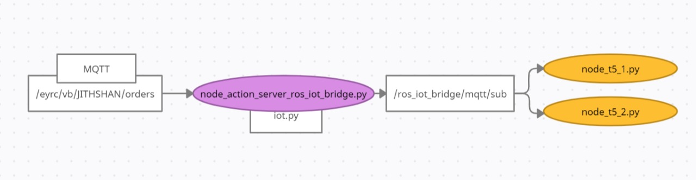

VB#1087 Task-5 Documentation
Introduction
In this task, all the packages' color is recognized using the feed from Camera#1. The packages are then picked by UR5#1 based on the incoming orders and their priorities. Then the packages are placed on the conveyor belt. The color of incoming packages on the conveyor belt is recognized using the feed of LogicalCamera#2. Then they are dropped into respective bins based on the color of the package. While the packages are identified and placed on the conveyor belt, the corresponding data is pushed to the spreadsheet at the necessary stages using the ros-iot bridge package. Also, email alerts are sent when orders are shipped and dispatched.
Task-5 Implementation Video
Implementation
We believe in divide and conquer approach, so we divided the task into small pieces and finally integrated it.
Network of ROS nodes and communication between them

The solution to the problem is divided into three main parts:
1. Action server(node_ros_iot_bridge_action_server)- acts as a bridge between the ROS nodes and IoT(MQTT and Spreadsheet).
2. Action client 1 (node_t5_1.py)- receives orders and does pick and place.
3. Action client 2 (node_t5_2.py)- which does color recognition and sorting of packages.

- We start with recognizing the packages' colors on the shelf and save this data and update the same to Inventory spreadsheet.
- once the orders are received, we start to process them based on the priority.
- Based on the order received, we direct ur5#1 to pick the package from the shelf and place it on the conveyor belt.
- ur5#2 then picks the package on the conveyor belt, sorts the package according to its color and drop it to the respective bin.
- Simultaneously we update the individual spreadsheets when a particular goal is achieved.
Overview of updating spreadsheet
Whenever there's a need to update a spreadsheet, action clients(node_t5_1 and node_t5_2 )send a goal to action server(node_action_sever_ros_iot_bridge) through ROS action named msgRosIot.action. This action server uses custom module pyiot to send a request to google spreadsheets using requests module of python.
Color recognition
So after having an idea of how the ROS nodes should work, our initial task was to identify the packages' color on the warehouse's shelf. We get a continuous stream of images of the shelf from the feed of Camera#1 (by subscribing to /eyrc/vb/camera_1/image_raw topic). Initially, we cropped out the background from the obtained feed. Later, we cropped the partially cropped image into 12 equal parts using openCV to obtain each package's QR code. Then we detected and decoded the QR codes in each cropped image to get the package color using the pyzbar library. We pushed the obtained colors into a list with the corresponding position in order 00, 01, 02, 10 .... To avoid changes in the color array, we made it a one time update (instead of unsubscribing from the topic)After detecting the color, update the inventory sheet, which contains the stock present in the warehouse and the package's position.

Updating the Inventory Sheet
After detecting the color, update the inventory sheet, which contains the stock present in the warehouse and the package's position. This is achieved by sending thedata to ros_iot_brdge action server as a goal which internally makes a request using python request module to update the spreadsheet.
Receiving the orders
After 1 minute of sim-time, orders are published on /eyrc/vb/JITHSHAN/orders MQTT topic at irregular time intervals. node_action_server_ros_iot_bridge(ROS node) starts a mqtt subscriber thread to the above topic during initialization(Using iot.py). Also the orders coming from this MQTT topic are published to a ROS topic /ros_iot_bridge/mqtt/sub. So other ROS nodes access these orders by subscribing to this ROS topic. These orders are pushed into orders list through subscriber callback function.

Update IncomingOrders sheet
While recieving the orders, we simultaneoulsy update the order details on IncomingOrders spreadsheet.
Pick and place
Once orders are received, we choose the package to be picked using the list of the pending orders. The list is iterated, and order with the highest priority (HP > MP > LP) is selected. If there are multiple orders with the highest priority, the oldest one is chosen. Based on the selected order, we iterate over the colors list(which is obtained after color detection) to get the package's position. Now we have the list index(i), based on this list index we calculate the position of the package on the shelf
If order is found at ith position(starting from 0) in colors list, position on shelf is given by
pos = str(i//3)+str(i%3)
eg., If selected order was Medicine and in colors list it was found at 5th position
pos = str(5//3) + str(5%3) = "12"
"packagen12" is picked
- UR5#1 is now directed to pick the package from the shelf with the aid of saved trajectories.Now the package corresponding to the order is picked from the shelf and placed on the conveyor belt.
- Corresponding items are removed from both order list and color list in order to avoid picking the same package which is already picked.
- Finally, data is pushed into OrdersDispatched sheet to track the shipment by sending a request to the ros_iot_bridge action server. Also an email notification is sent using Google app script.
Sorting the packages
When the package reaches near UR5#2, Logical Camera #2 detects the package on the conveyor belt and the conveyor belt is stopped. * Conveyor belt is controlled using the feed of eyrc/vb/logical_camera_2 topic. Whenever package reaches within a certain range from the Logical Camera#2, conveyor belt is stopped. * Also, using the same topic we can obtain the package details(package name). Now, knowing the package name, we can get color of the package from the colors list as follows:
If package name is "packagenxy", index of the package in colors list is given by,
i = int(x*3 + y)
For example, if package name is packagen12,
i = int(1*3 + 2) = 5
Color at this index(starting from zero), is retrieved in order to find the color of the package.
- Knowing the package color we sort the packages , UR5#2 is now diredcted to move towards the respective bin and drop the package.
- Conveyor belt is powered on after this.
- Also, data is pushed into the OrdersShipped sheet by sending a request to the ros_iot_bridge action sever. Also an email alert is sent to the user using Google app script.
Warehouse Dashboard
- To have a proper UI, Warehouse system is made in to a webpage which is hosted on Github. Data to this webpage is provided by a json endpoint which is obtained from the Dashboard sheet of google spreadsheets.
- Dashboard sheet references data from other sheets like IncomingOrders, OrdersDispatched, OrdersShipped and aggregated into a single sheet with necessary data.
API documentation
pkg_ros_iot_bridge
msgRosIot.action
This action file is for communication between action server (node_action_server_ros_iot_bridge) and action clients (node_t5_1 and node_t5_2) This is used to obtain the orders from mqtt topic and to publish to spreadsheet
# goal
string protocol # mqtt
string mode # pub(to publish to spreadsheet) or sub(to obtain orders)
string topic # Taken from config_pyiot.yaml mqtt:topic_pub
string sheetid # Sheet ID of the spreadsheet
string orderid # order ID obtained from the incoming orders
string item # item type of the order (eg., Medicine)
int8 quantity # quantity of order
string city # city name obtained from the incoming orders
string sku # This is the Inventory's Stock Keeping Unit.
string latitude # latitude obtained from incoming orders
string longitude # longitude obtained from incoming orders
---
# result
bool flag_success # result of processed request
---
# feedback
int8 percentage_complete # feedback given by server during request processing
config_pyiot.yaml
Parameters to be loaded to parameter server that are used by ROS nodes for mqtt subscription.
config_pyiot:
mqtt:
server_url: "broker.mqttdashboard.com" # http://www.hivemq.com/demos/websocket-client/
server_port: 1883
topic_sub: "/eyrc/vb/JITHSHAN/orders" # <unique_id> = JITHSHAN
topic_pub: "eyrc/JITHSHAN/ros_to_iot" # <unique_id> = JITHSHAN
qos: 0
sub_cb_ros_topic: "/ros_iot_bridge/mqtt/sub" # ROS nodes can listed to this topic to receive data from MQTT Subscription
google_apps:
spread_sheet_id: "AKfycbzCBQ_GXXUg8AdezJODXQVyvsfiQX0ImgYLtiFUsKMDjWH4uSyX6_uzig"
msgMqttMsgSub.msg
For messages on mqtt topic
time timestamp
string topic
string message
iot .py
Functions to perform IoT related tasks
1. Subscribing from mqtt topic to get orders
2. Publishing to a mqtt topic (if required)
3. Updating the spreadsheet
- mqtt_subscribe_thread_start(arg_callback_func, arg_broker_url,arg_broker_port, arg_mqtt_topic, arg_mqtt_qos)
Start a subscriber thread to mqtt topic
Parameters:
----------
arg_callback_func : function
callback function to be used
arg_broker_url : str
url of the broker
arg_broker_port : int
connected port number
arg_mqtt_topic : str
topic to publish message
arg_mqtt_qos : int
qos level
- mqtt_publish(arg_broker_url, arg_broker_port,arg_mqtt_topic, arg_mqtt_message, arg_mqtt_qos)
Publishes the message to a specified mqtt topic
Parameters:
----------
arg_broker_url : str
url of the broker
arg_broker_port : int
connected port number
arg_mqtt_topic : str
topic to publish message
arg_mqtt_message : str
message to be published
arg_mqtt_qos : int
qos level
- update_spreadsheet(*argv)
Update the spreadsheet with the provided parameters
Parameters:
----------
Can provide any no of parameters that needs to be updated in spreadsheet
Each parameter is a dictionary that has details to update the specific spreadsheet
with coloum name as key with it's respective value
node_ros_iot_bridge.py
Action server and bridge between ROS nodes and IoT
class RosIotBridgeActionServer:
Subscribe and publish to mqtt topics and
push data to spreadsheets
- mqtt_sub_callback(self, client, userdata, message)
Callback function for mqtt subscription this function should
be called whenever we are subscribing to a mqtt topic
Parameters:
----------
client : str
subscriber client
userdata: str
data of user
message: str
message obtained after subscription
- on_goal(self, goal_handle)
Validate a goal and start processing it
Parameters:
----------
goal_handle : str
goal to process
- process_goal(self, goal_handle)
Process the goal sent by client
Parameters:
----------
goal_handle : str
goal to be processed
- on_cancel(self, goal_handle)
Print goal_id of the goal to be canceled
parameter
---------
goal_handle : str
goal to be canceled
pkg_task5
node_t5_1.py
class IotRosBridgeActionClient:
Action client to send goals to action server
- on_transition(self, goal_handle)
Log when there's a transition in the state
parameter
---------
goal_handle : str
new goal
- send_goal(self, arg_protocol, arg_mode, arg_topic, arg_sheetid, arg_orderid, arg_item,arg_quantity, arg_city, arg_sku, arg_datetime, arg_latitude, arg_longitude)
Send goals to a action server
parameter
---------
arg_protocol : str
protocol
arg_mode : str
pub or sub mode
arg_topic : str
ROS topic to subscribe or publish message
arg_sheetid : str
sheet name
arg_orderid : str
order id
arg_item : str
item
arg_quantity :int
quantity
arg_city :str
city name
arg_sku :str
SKU
arg_datetime :str
date and time string
arg_latitudearg
latitude information
arg_longitude :str
longitude information
class Ur5:
process pick and place
- vacuum_gripper_activator(self, bool_x)
activate or deactivate the vacuum gripper
parameter
----------
bool_x : bool
- set_joint_angles(self, arg_list_joint_angles)
To set the joint angles of UR5 in gazebo using moveit! python API
parameters
-----------
arg_list_joint_angles : str
list containing the joint angles
- clear_octomap(self)
resetting octomap
- hard_set_joint_angles(self, arg_list_joint_angles, arg_max_attempts)
To set the joint angles of UR5 in gazebo using moveit! python API with number of attempts
parameters
----------
arg_list_joint_angles : str
list containing the joint angles
arg_max_attempts : int
max number of attempts
- moveit_play_planned_path_from_file(self, arg_file_path, arg_file_name)
play planned path from a saved trajectory
parameters
----------
arg_file_path : str
file path fo
- moveit_hard_play_planned_path_from_file(self,arg_file_path,arg_file_name, arg_max_attempts)
Play the trajectory which is already saved with given no of attempts
Parameters
-----------
arg_file_path: str
path to the saved trajectory
arg_file_name: str
name of the saved trajectory file
arg_max_attempts: int
max no to attempts to play the path successfully
- sub_callback(self, data)
subscriber callback function for incoming orders
parameters
----------
data : str
details of order
class Camera1:
process Camera#1 data
- get_qr_data(self, arg_image)
decode qr data from image
parameters
-----------
arg_image: array(image)
cropped image with qr code
- callback(self, data)
callback function to obtain feed of camera
parameters
----------
data : array(image)
image data from Camera#1
node_t5_2.py
class IotRosBridgeActionClient:
Same as in node_t5_1.py
action client to send goals to action server
- on_transition(self, goal_handle)
- send_goal(self, arg_protocol, arg_mode, arg_topic, arg_sheetid, arg_orderid, arg_item, arg_quantity,arg_city, arg_sku, arg_datetime, arg_latitude, arg_longitude)
- conveyor_belt_activator(power_x)
activates the conveyor belt with the given power
parameter
---------
power_x : int
power to activate the conveyor belt
class Camera1:
Same as in node_t5_1.py
process Camera#1 data
- get_qr_data(self, arg_image)
- callback(self, data):
class Ur5:
process pick and place
- logical_camera_callback(self, data):
callback function to subscribe to feed of logical camera
parameters
----------
data : str
data of the subscription
Following methods are same as in node_t5_1.py
- vacuum_gripper_activator(self, bool_x)
- clear_octomap(self)
- moveit_play_planned_path_from_file(self, arg_file_path,arg_file_name)
- moveit_hard_play_planned_path_from_file(self,arg_file_path,arg_file_name,arg_max_attempts)
- sub_callback(self, data)